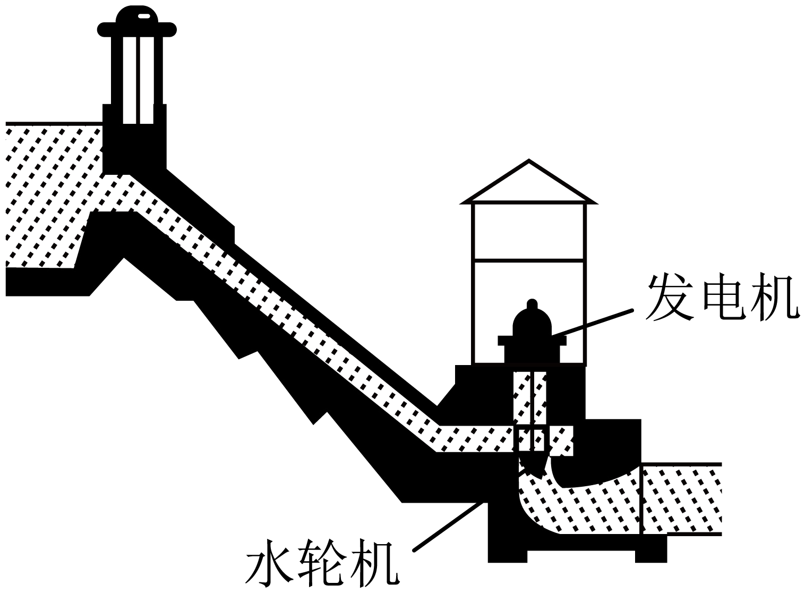

2023年北京中考物理 第9题 解析
9. 如图所示，人们修筑拦河坝来提高上游的水位，在坝底安装水轮机带动发电机发电。上游一定量的水，经水轮机流到下游的过程中，下列说法正确的是（ ）

A. 水 机械能不变
机械能不变
B. 水的重力势能增大，动能减小
C. 水轮机带动发电机发电，电能转化成机械能
D. 上游水位越高，能够发出的电能越多
【答案】D
【解析】
【详解】AC．上游一定量的水，经水轮机流到下游的过程中，在水轮机处带动发电机发电。将水的机械能转化为电能，因此水的机械能减小，故AC错误；
B．上游一定量的水，经水轮机流到下游的过程中，水的质量不变，高度降低，重力势能减小，转化为水的动能，则水的动能增加，故B错误；
D．水电站发电时，上、下水位差越大，水的重力势能越大，能够转化的动能就越多，带动水轮机发出的电能就越多，故D正确。
故选D。